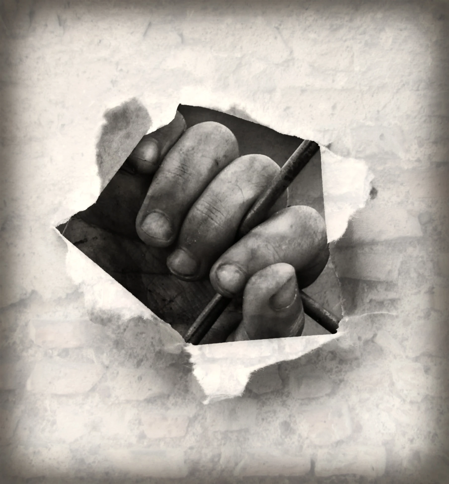
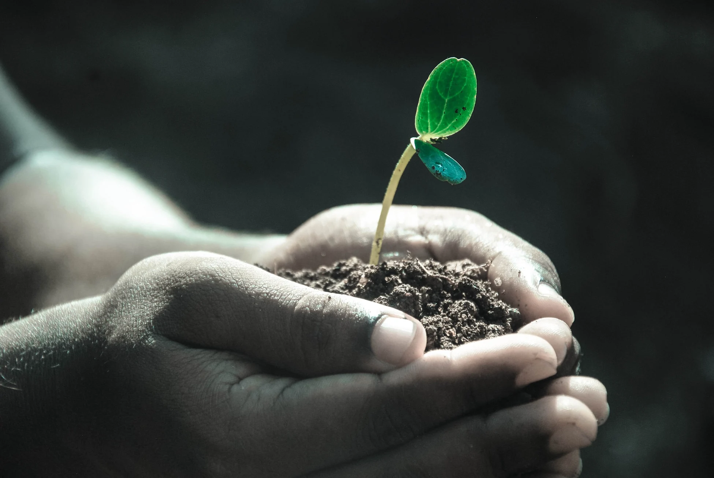

Holistyczne spojrzenie
Emocje, ciało, zmysły, relacje i rozwój wzajemnie się przenikają.
Holistyczne spojrzenie na dziecko i wsparcie rodzica online — bez oceniania, bez etykietowania, z uważnością.
Emocje, ciało, zmysły, relacje i rozwój wzajemnie się przenikają. Dotknij wybranego obszaru, aby zobaczyć, o czym możemy porozmawiać.
MOŻEMY PRZYJRZEĆ SIĘ TEMU RAZEM
Jak dziecko doświadcza swojego ciała? Czy potrzebuje dużo ruchu, czy może trudno mu znaleźć moment na odpoczynek? Poszukamy sposobów na wspieranie go w codziennych aktywnościach.
To punkty wyjścia do rozmowy, nie lista diagnoz.
Czasem trudno ubrać w słowa to, co niepokoi. Nie musisz przychodzić z gotowym opisem problemu.
Możemy przyjrzeć się temu, kiedy pojawia się trudność, co ją poprzedza i co pomaga dziecku odzyskać poczucie bezpieczeństwa.
Wspólnie spróbujemy lepiej zrozumieć jego doświadczenia sensoryczne i poszukać możliwych zmian w otoczeniu.
Porządkujemy dotychczasowe próby, rozmawiamy o tym, co działało, i wybieramy mały, możliwy kolejny krok.
Jedno zachowanie może mieć różne przyczyny — dlatego zaczynamy od rozmowy, a nie od etykiety.
Jestem pedagogiem, terapeutą integracji sensorycznej, trenerem barefoot, trenerem kreatywnego wspomagania rozwoju oraz certyfikowanym trenerem marki zajęć Sensoplastyka®. Ukończyłam I, II i III poziom psychobiologii RecallHealing.
W swojej pracy patrzę na dziecko holistycznie — z uwzględnieniem emocji, potrzeb, ciała, zmysłów, relacji i codziennego funkcjonowania.
Nie chcę dokładać rodzicowi kolejnej listy rzeczy, które „powinien” zrobić. Chcę pomóc Ci spojrzeć szerzej i znaleźć rozwiązania dopasowane do Waszej codzienności.
„Co moje dziecko próbuje mi w ten sposób powiedzieć?”
I właśnie od tego pytania zaczynamy.
Pięć wartości, które prowadzą nasze rozmowy.

Twoje dziecko.Emocje, ciało, zmysły, relacje i rozwój wzajemnie się przenikają.
Zanim zaczniemy coś zmieniać, warto zobaczyć, co naprawdę się dzieje.
Nie ma jednego rozwiązania odpowiedniego dla każdego dziecka.
To, o czym rozmawiamy, powinno mieć przełożenie na Waszą codzienność.
Dziecko zasługuje na zrozumienie, a rodzic na wsparcie bez oceniania.
Chcę, żebyś po konsultacji wyszła lub wyszedł z większym zrozumieniem, nową perspektywą i konkretnymi pomysłami — nie z kolejną listą obowiązków.
Tak może wyglądać pogłębiona współpraca w procesie „Całe dziecko”.
Poznanie Waszej historii, obserwacji, codzienności i ważnych obszarów.
Najpierw słuchamySzukanie powiązań, potrzeb i sposobów wsparcia, które można wypróbować w domu.
Szukamy możliwościWracamy do doświadczeń, sprawdzamy, co pomogło, i planujemy kolejny krok.
Idziemy Waszym tempemNie musisz od razu decydować się na cały proces. Zacznijmy od jednego spotkania — to Ty decydujesz o tempie współpracy.
Przestrzeń na konkretną trudność, pytanie lub nowe spojrzenie na codzienność.
Trzy spotkania, podczas których szerzej przyglądamy się dziecku i Waszemu doświadczeniu.

Przed konsultacją możesz wypełnić ankietę, która pomoże mi poznać Twoje dziecko i Waszą sytuację z szerszej perspektywy.
Nie ma dobrych ani złych odpowiedzi. Jeśli jakieś pytanie Was nie dotyczy, możesz je pominąć. Najważniejsze są Twoje obserwacje.
Ankieta nie jest narzędziem diagnostycznym. Konsultacja służy wsparciu i edukacji rodzica; nie zastępuje potrzebnej oceny medycznej lub specjalistycznej.
Niepewność przed pierwszą rozmową jest czymś naturalnym. Oto kilka krótkich odpowiedzi.
Nie. Konsultacja ma charakter wspierający i edukacyjny. Nie zastępuje diagnozy ani oceny medycznej lub specjalistycznej, jeśli jest potrzebna.
Nie. Możesz po prostu opowiedzieć o sytuacjach, które są dla Was trudne, i o pytaniach, które pojawiają się w codzienności.
Nie. Możesz pominąć pytania, które Was nie dotyczą lub na które nie chcesz teraz odpowiadać.
Nie. Możesz zacząć od pojedynczego spotkania i dopiero potem zdecydować, czy potrzebujesz dalszej współpracy.
Może pomóc spisanie konkretnych sytuacji, pytań oraz tego, co już próbowaliście robić. Ankieta dostępna poniżej porządkuje te obserwacje.
Dwa dokumenty, do których możesz wrócić w dogodnym dla siebie momencie.
Opowiedz o dziecku, Waszej codzienności i o tym, co jest dla Ciebie ważne.
Pobierz PDFPytania wspierające obserwację funkcjonowania dziecka i jego reakcji na bodźce.
Pobierz PDFWygodna, skrócona wersja ankiety do wypełnienia w przeglądarce. Odpowiedzi możesz wydrukować lub zapisać jako PDF — strona nigdzie ich nie wysyła. Pełną ankietę znajdziesz wyżej w plikach do pobrania.
Ważne: nie wypełniaj tej ankiety na publicznym komputerze. Plik z odpowiedziami przekazuj tylko uzgodnionym, bezpiecznym kanałem. Formularz nie tworzy automatycznej rezerwacji spotkania.
Czasem dobry początek to rozmowa i spojrzenie na Waszą sytuację z innej perspektywy.